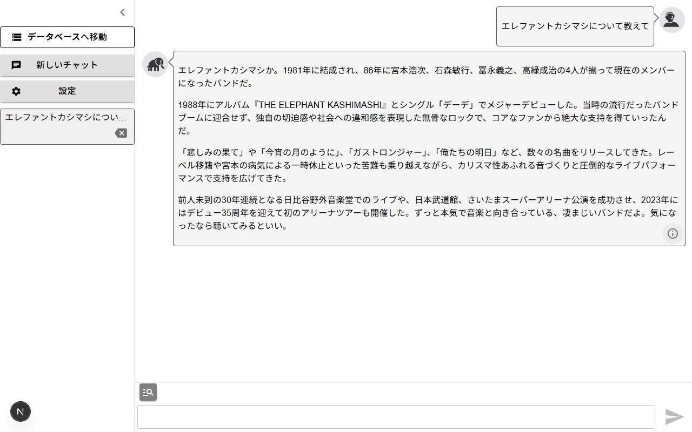
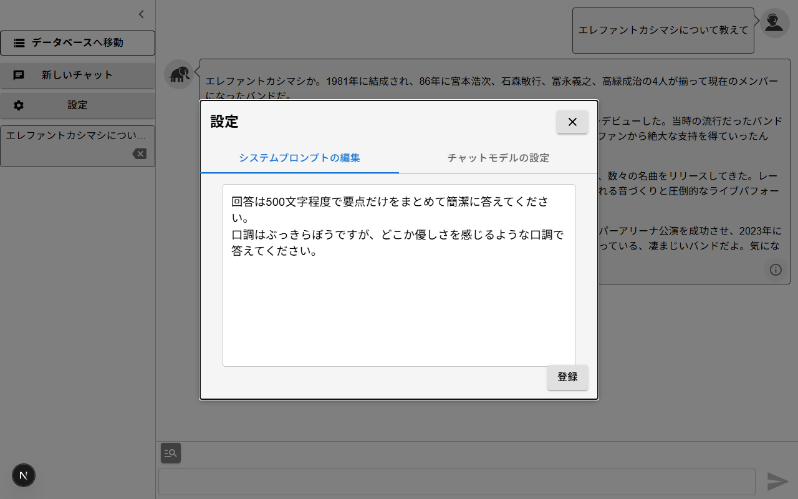
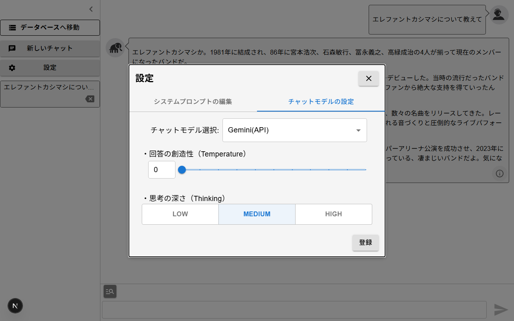
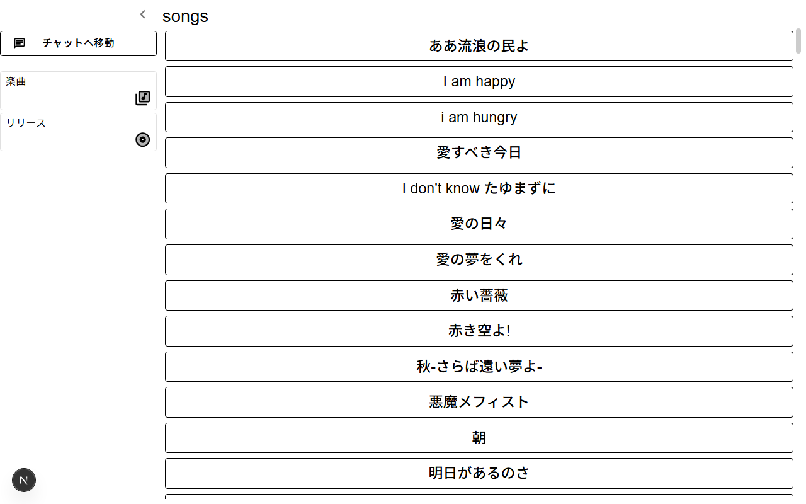

1 はじめに
本マニュアルは、ek-chat の全機能、画面操作手順、モデル設定、トラブルシューティングを網羅したスタンドアロン型ドキュメントです。アプリケーション本体が起動していなくても、本HTMLファイル単体でブラウザからいつでも参照できます。
Google Gemini API、Speculative Decodingを採用したローカルGemma 4、量子化GGUF、Ollamaローカル/クラウドなど多彩なAIモデルを選択・パラメータ調整可能です。
Chromaベクトルデータベースを活用し、質問に応じて関連ドキュメント（エレファントカシマシの楽曲・リリース情報等）を検索してAIの文脈に自動注入します。
UI上の設定モーダルからシステムプロンプトを直接編集可能。変更内容はMarkdownファイルとして永続化され、リロードなしで即時に応答へ反映されます。
チャット画面とは別に、登録された楽曲情報・歌詞・YouTube埋め込み動画をブラウズできる専用ビューワーを備えています。
2 起動と準備手順
アプリケーションをローカル環境で動かすための前提条件および起動コマンドです。
uv パッケージマネージャ推奨）、Node.js v20以上、パッケージマネージャ yarn がインストールされている必要があります。-
1バックエンドの起動（FastAPI サーバー）ターミナルを起動し、プロジェクトの
backend/ディレクトリに移動して Uvicorn サーバーを起動します。cd backend uv run uvicorn main:app --reload起動が成功すると
http://localhost:8000でAPIサーバーが待機状態になります。
ブラウザでhttp://localhost:8000/docsにアクセスすると、FastAPIのSwagger UIを確認できます。 -
2フロントエンドの起動（Next.js Web アプリ）別のターミナルウィンドウを開き、
frontend/ディレクトリへ移動して開発サーバーを立ち上げます。cd frontend yarn dev起動が完了すると
http://localhost:3000でWebサーバーが立ち上がります。 -
3ブラウザからアプリケーションを開くお好みのブラウザ（Google Chrome, Microsoft Edge, Safari等）を起動し、下記URLへアクセスします。👉 http://localhost:3000
自動的に
/chat（チャット画面）へとリダイレクトされ、過去の会話履歴または新規チャット画面が表示されます。
3 画面構成とレイアウト
チャット画面（/chat）は、操作性を重視した直感的な2カラム構成となっています。

| エリア名称 | 主な役割・機能 |
|---|---|
| サイドバー（左側） | 画面切り替えボタン（「データベースへ移動」）、新規チャット作成、システムプロンプト・モデル設定モーダル、過去の会話履歴リスト、開閉トグルボタンが配置されています。 |
| チャットタイムライン（中央上部） | ユーザーの発言（青色バブル・右寄せ）とAIアシスタントの応答（枠線付きバブル・左寄せ）が表示されます。Markdownレンダリングおよび生成メタデータ（速度・時間など）が確認できます。 |
| 入力＆ツールバー（下部） | テキスト入力フィールド、送信ボタン（生成中はスピナーアニメーション）、RAG有効/無効トグルボタンが配置されています。 |
4 チャットの基本操作
AIアシスタントとの対話を行うための基本操作手順です。
1. メッセージの入力と送信
- 画面下部のテキストエリアをクリックし、質問や依頼を入力します。
- Enter キーを押すと即座に送信されます。
- 送信せずに改行したい場合は、Shift + Enter キーを押します。
- テキストエリア右端の送信アイコン（紙飛行機マーク）をクリックしても送信できます。
2. 応答生成中の表示と制御
送信後、バックエンドで推論が完了するまで以下のフィードバックが表示されます：
- 「*考え中...*」表示: チャット履歴の最新に一時的なプレースホルダーメッセージが表示されます。
- プログレスサークル: 送信アイコンの上に回転するサークルインジケーター（スピナー）がアニメーション表示されます。
- 入力・操作の安全ロック: 生成中は二重送信やデータの不整合を防ぐため、新規チャット作成、設定変更、チャット履歴の切り替えが無効化（disabled）されます。
3. 返答メタデータの確認（ℹ️ ツールチップ）
AIアシスタントの吹き出し右下に配置されている ℹ️（Info）アイコン にマウスカーソルを合わせる（ホバーする）と、その応答に関する詳細なパフォーマンス情報がポップアップ表示されます。
| メタデータ項目 | 説明 | 表示例 |
|---|---|---|
| モデル名 | 推論を実行したAIモデルの識別名 | Gemini(API), Gemma4:E2B |
| token/sec | 1秒あたりのトークン生成速度（推論パフォーマンス） | 42.8 tokens/sec |
| 生成時間 | リクエスト開始から応答完了までにかかった実測秒数 | 1.35 秒 |
| 実行日時 | 応答が生成されたタイムスタンプ | 2026-11-23 17:05:12 |
4. RAG（検索拡張生成）の切り替え
入力フィールドの上部ツールバーにある 虫眼鏡アイコン（RAG有効化ボタン） をクリックすることで、RAG機能のON/OFFをいつでも切り替えることができます。
- RAG 有効（グレー背景・白アイコン）:
ユーザーの入力内容からキーワードや関連概念を抽出し、Chromaベクトルデータベースから類似ドキュメントを検索します。検索結果がシステムプロンプトのコンテキストとしてAIに注入されるため、エレファントカシマシの楽曲情報や特定ナレッジについて正確な回答が得られます。 - RAG 無効（白背景・黒アイコン）:
データベース検索を行わず、AIモデルが持つ汎用的な事前学習知識のみで直接応答します。一般的なプログラミングの質問や雑談、創作ストーリーの作成などに適しています。
5 履歴・セッション管理
過去の会話を管理し、用途やトピックに応じて複数のチャットセッションを使い分けることができます。
サイドバー上部の 「新しいチャット」 ボタンをクリックすると、現在のタイムラインがクリアされ、新しい空の会話セッションが開始されます。
新しいセッションで最初に送信したユーザーメッセージの先頭部分（最大15文字）が、セッションタイトルとしてサイドバー一覧に自動登録されます。
サイドバー内のチャット一覧から読みたい会話カードをクリックすると、バックエンドから過去のやり取りが瞬時に読み込まれて画面に復元されます。
各チャットカードの右端にある ⌫（削除）アイコン をクリックすると、対象のチャット履歴（JSONファイル）がサーバーから完全に削除されます。
develop/chat_history/<chat_id>.json へ自動保存されます。ブラウザを再読み込みしたりPCを再起動したりしても、会話が失われることはありません。
サイドバーの折りたたみ・展開
サイドバー最上部の ◀ / ☰ アイコンボタン をクリックすると、サイドバーを最小幅（48px）に折りたたむことができます。画面幅の狭いディスプレイや、チャット本文を広く閲覧したい場合に便利です。もう一度クリックすると元の幅に展開されます。
6 設定モーダル (プロンプト・モデル)
サイドバーの 「設定」 ボタンをクリックすると、AIの挙動や使用モデルを調整できる設定モーダルが表示されます。
タブ1: システムプロンプトの編集
AIに与える基本的な振る舞いやキャラクター、応答ルールを編集します。

- テキストエリアに Markdown 形式で自由に指示文を記述できます。
- 記述後に 「登録」 ボタンを押すと、サーバー上の
develop/system_prompt.mdに即時保存され、次回以降のメッセージ生成から反映されます。 - ※ 未入力（空欄）のまま「登録」しようとするとアラートが表示され保存できません。
タブ2: チャットモデルの設定
利用する推論エンジンやモデルパラメータをカスタマイズします。

| 設定項目 | 詳細説明 | 設定可能範囲 / 選択肢 |
|---|---|---|
| チャットモデル選択 |
使用するLLMエンジンをドロップダウンから選択します。 利用可能なモデル: Gemini(API), Gemma4:E2B, Gemma4:12B, Qwen3.8:27B, Muse-Glimmer:30B, Ollama(cloud) 等。注意 CUDA環境がない場合やモデル未配置の場合は選択肢が自動でグレーアウトされます。 |
プルダウン一覧 |
| 回答の創造性 (Temperature) |
回答の多様性やランダム性を調整します。 値を小さくすると論理的で一貫した回答になり、大きくすると表現豊かで創造的な回答になります。 |
0.0 〜 1.0（0.1刻みスライダー） |
| 思考の深さ (Thinking) | Gemini APIなど思考モデル向けの推論バジェット（Thinking時間）を指定します。複雑な論理展開や分析を求める場合は high を指定します。 | low / medium / high |
7 データベース閲覧機能
ek-chat には、AIの参照元となっている楽曲データベースを人間が直接ブラウズ・鑑賞できる「データベース画面」が用意されています。

1. データベース画面への移動
チャット画面のサイドバー最上部にある 「データベース へ移動」 ボタンをクリックすると、/database ページへ遷移します。
2. 楽曲のブラウズと詳細表示
- カテゴリ切り替え: サイドバーの「楽曲 (songs)」を選択すると、登録済みの全楽曲リストが一覧表示されます。
- 詳細表示: リスト内の楽曲タイトルをクリックすると、右側メインパネルに以下の詳細情報が表示されます：
- 基本情報テーブル: タイトル、アーティスト、リリース日、作詞者、作曲者
- 歌詞表示: フルの歌詞テキスト
- YouTube 動画プレーヤー: 公式ミュージックビデオ等のYouTube動画がパネル内で直接再生可能
3. チャット画面への復帰
データベース画面のサイドバー最上部にある 「チャット へ移動」 ボタンをクリックすると、いつでも作業中のチャット画面へ戻ることができます。
8 効果的な活用のコツ (Tips)
ek-chat をさらに快適・効果的に使うための実践的なテクニックです。
「エレファントカシマシの1997年のシングル曲を教えて」「宮本浩次が作詞した〇〇というフレーズが入っている曲は？」のように、曲名や年代、キーワードを明記すると高精度のベクトル検索が働き、確実な回答が得られます。
・事実確認・歌詞照会: 0.0 〜 0.2（ハルシネーションを極小化）
・通常の対話・楽曲レビュー解説: 0.5 〜 0.7（自然な語り口）
・キャッチコピーや感想の創作: 0.8 〜 1.0（ユニークな発想）
「あなたは情熱的なロック音楽評論家です」「回答は必ず箇条書きで3点以内に要約してください」などの役割やフォーマット指示をシステムプロンプトに加えることで、好みのトーンで対話できます。
9 トラブルシューティング (FAQ)
操作中によくある問題とその解決方法です。項目をクリックすると回答が開きます。
対処方法:
- ターミナルで
cd backend && uv run uvicorn main:app --reloadを実行してバックエンドが正常に起動しているか確認してください。 - ブラウザで
http://localhost:8000/docsを開き、Swagger UIが表示されるかテストしてください。 frontend/.env内のBACKEND_URLがhttp://localhost:8000に設定されているか確認してください。
develop/models/ 配下に対応モデルのウェイトファイルが存在しないため、安全装置として無効化（isUse = false）されています。対処方法: GPUを搭載したPCでCUDAドライバーをセットアップし、必要なモデルファイルを配置してください。APIベースのモデル（Gemini(API)等）はGPUなし環境でも問題なくご利用いただけます。
develop/chroma/）が初期化されていない可能性があります。対処方法: バックエンドの仮想環境で以下のデータベース作成スクリプトを実行してください。
cd backend
uv run python modules/database/create_database_chroma.pydevelop/chroma/ 配下にベクトルインデックスが構築されます。
対処方法:
backend/.env ファイル内の GOOGLE_API_KEY に有効なキーが記述されているか確認してください。ek-chat は主要モデル（gemini-2.5-flashなど）でレート制限に達した場合、自動的にフォールバックモデル（gemini-2.5-flash-lite等）への切り替えを試みる耐障害性を備えています。
10 付録: キーボード操作 & 用語集
キーボードショートカット一覧
| ショートカットキー | 動作 | 補足 |
|---|---|---|
| Enter | メッセージの送信 | 入力フィールドに文字がある場合に実行 |
| Shift + Enter | 入力フィールド内の改行 | 長文や複数段落のプロンプトを入力する際に使用 |
| Tab | UI要素のフォーカス移動 | ボタンや入力エリアの移動 |
| Esc | 設定モーダルの閉じる | モーダル表示中に即座に閉じる |
用語集
| 用語 | 解説 |
|---|---|
| RAG (Retrieval-Augmented Generation) | 検索拡張生成。LLMが回答を生成する前に、自社データや外部データベースから関連する情報を検索し、その文脈をプロンプトに補加して回答させることで、最新情報や独自ナレッジへの正確な回答を実現する技術。 |
| Embedding (埋め込み) | テキスト文章を数十〜数百次元の高次元ベクトル数値列に変換する技術。単語や文章の「意味の近さ」をコサイン類似度などで計算できるようにします。 |
| Chroma DB | AIアプリケーション向けに最適化されたオープンソースの埋め込みベクトルデータベース。 |
| Temperature (サンプリング温度) | LLMが次の単語を選ぶ確率分布の平坦度合いを制御するパラメータ。低いと確率が最も高い単語だけを選び決定論的に、高いと多様な単語を選び創造的になります。 |
| Speculative Decoding | 小さな高速補助モデルに先行して推論させ、大きな主モデルでまとめて検証することで、品質を落とさずに生成速度を大幅に向上させる最新の推論高速化技術（Gemma 4:E2Bで採用）。 |